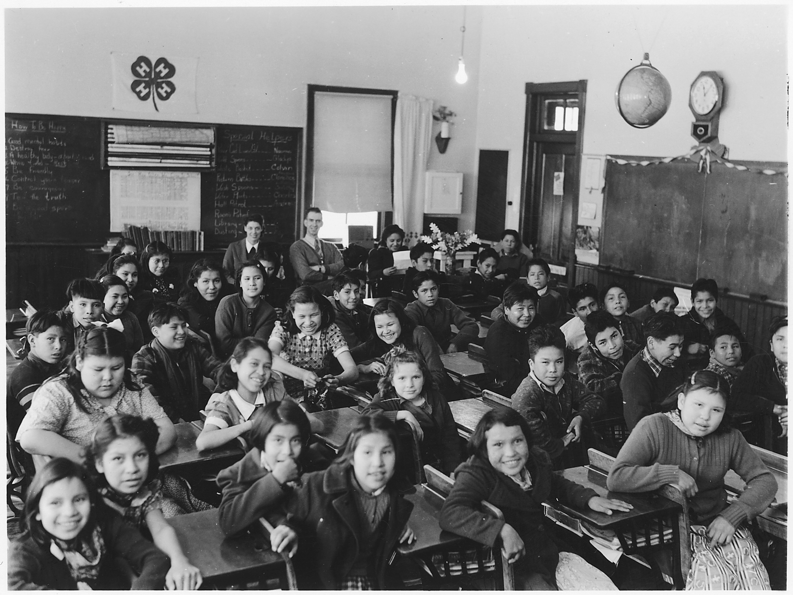

Lecture 1: The Syllabus and Other Important Course Information
CS-44105-001 - Web Programming I - Fall 2026

The first lecture of the semester introduced the course itself: CS-44105-001, Web Programming I, taught by Giovanni Villalobos Herrera, M.S., Instructor of Computer Science. This session covered the syllabus in detail, including course goals, grading policies, and how the semester is structured week by week.
Course expectations were also outlined: students are expected to complete weekly Hands-On activities and lecture readings, and submit projects on time following strict web-server submission rules (for example, never moving submitted files after grading has started). The instructor also shared office hours for questions: in person Monday from 11:00 am to 12:00 pm, and Tuesday and Thursday from 3:30 to 5:30 pm.
Finally, the required textbook for the course was introduced: Connolly and Hoar, 3rd Edition, starting with Chapter 1, Sections 1 and 2, "Intro to Web Development." This textbook will be used throughout the semester to support lecture material and Hands-On assignments.